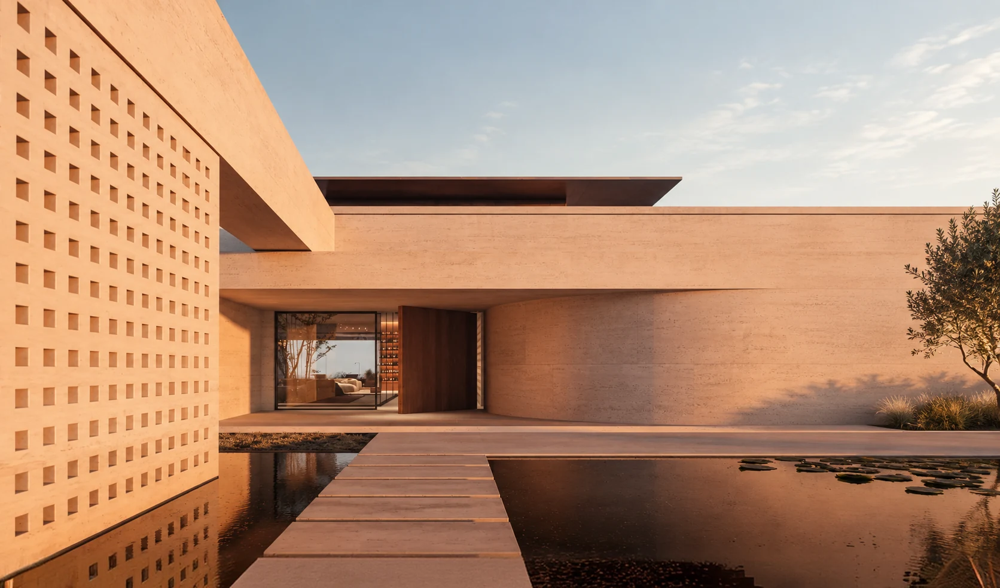
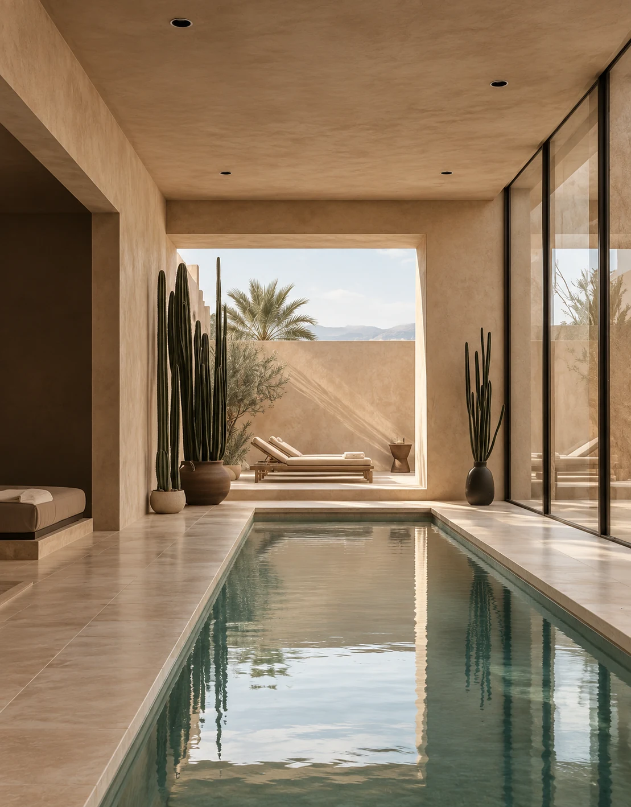
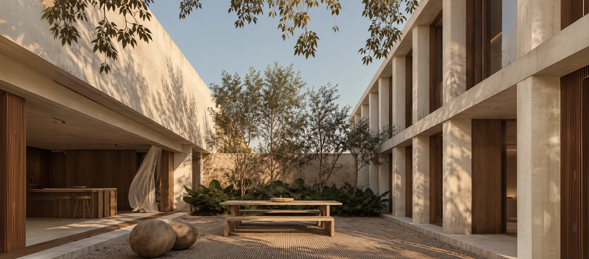
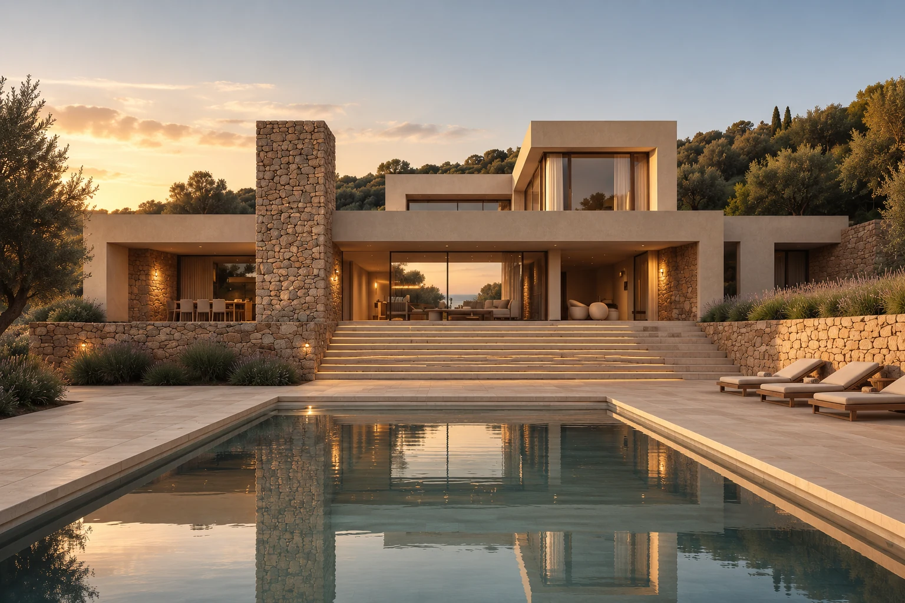
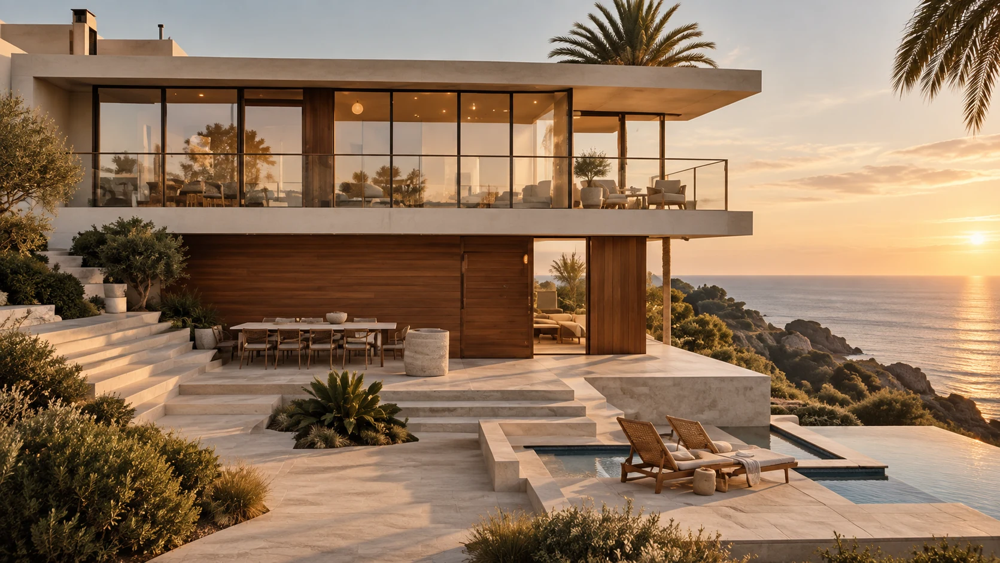
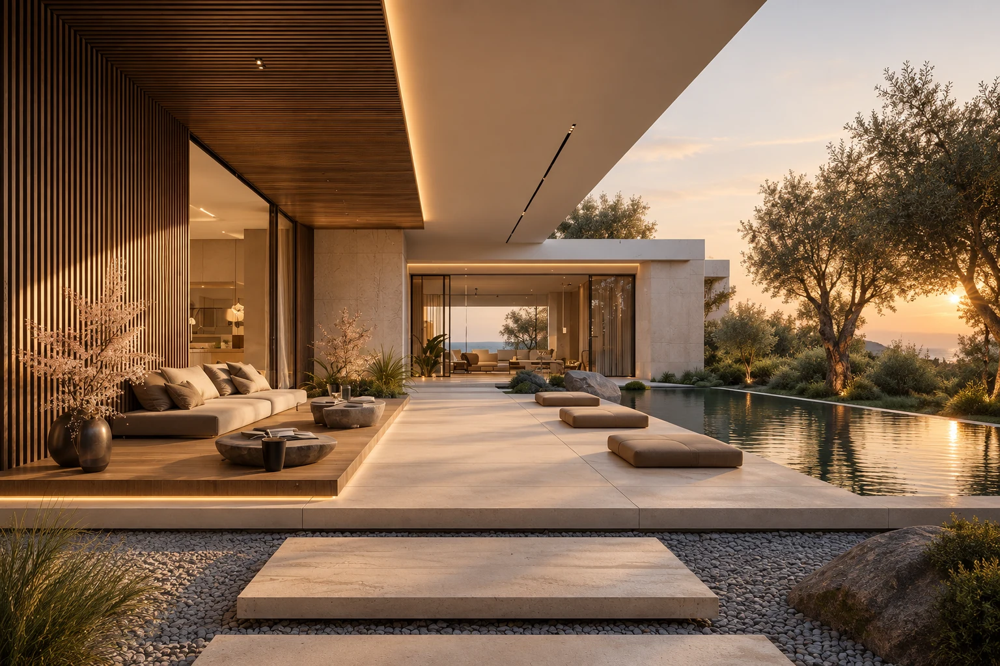
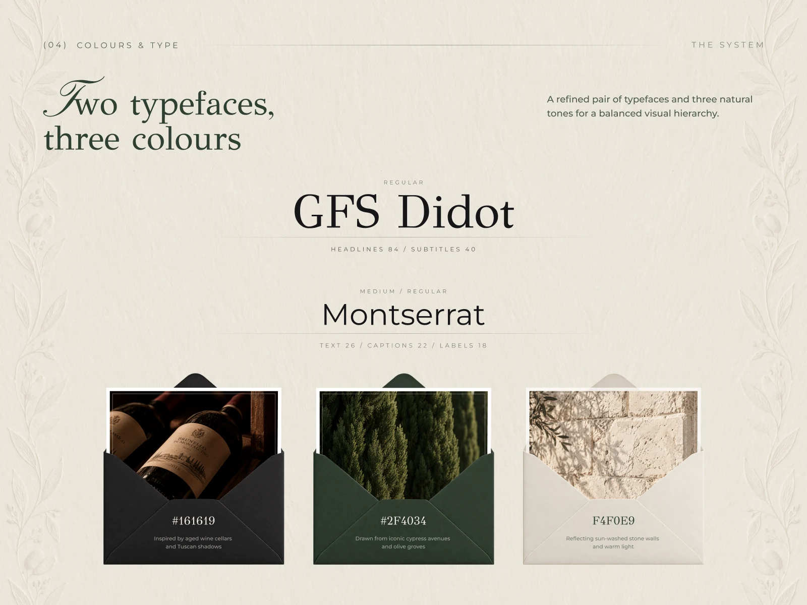
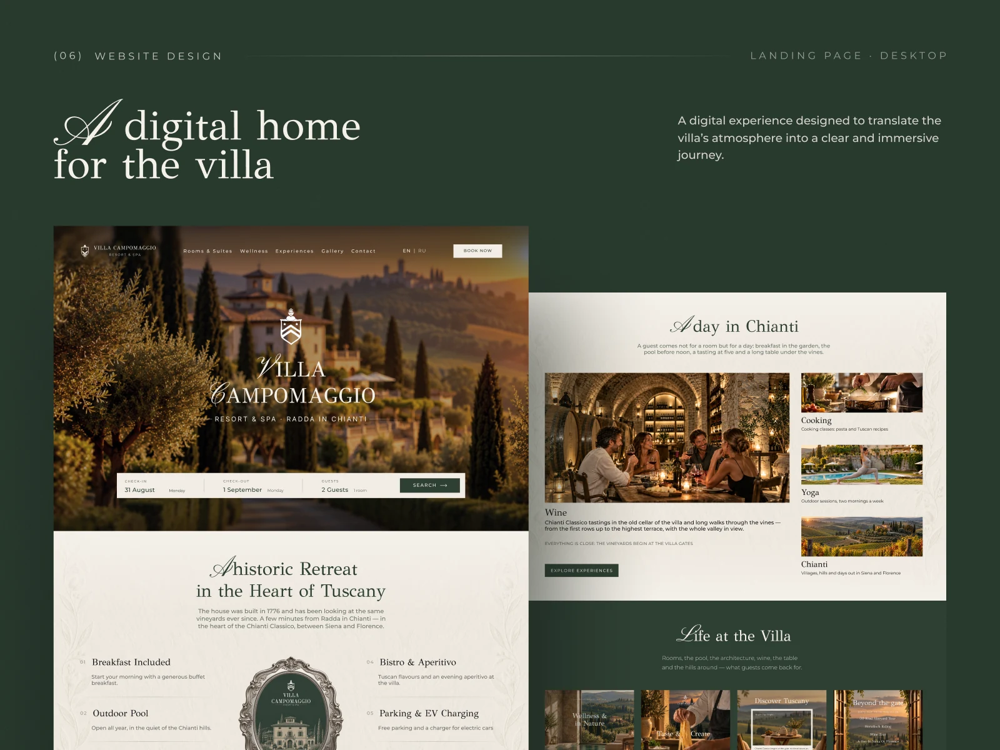
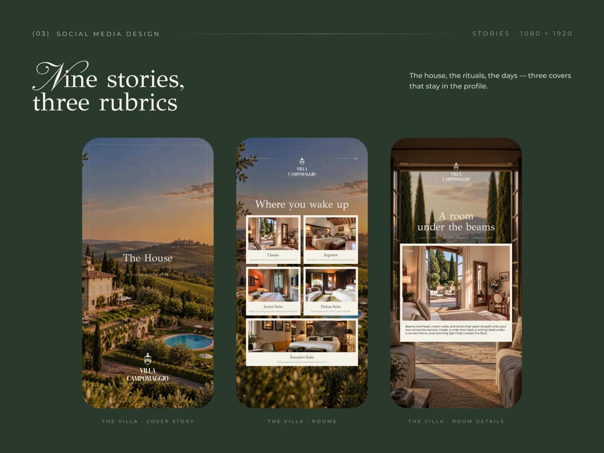

SHARED CONTEXT
We become part of your team, so you don’t have to explain new inputs or rules twice.

Creative Execution Partner for Real Estate Developers
Your marketing team defines the strategy, and we carry out the work to implement it – from the first project concept to regular updates.
We become part of your team, so you don’t have to explain new inputs or rules twice.
Marketing sets the strategy and deadlines. We organise the work to deliver on time.
We provide all the skills needed throughout the real estate product lifecycle – from identity to ongoing updates.
WHY YARSY


Unit prices change – the website, presentations, and campaign materials need updating. A monthly construction report is released – new visuals, posts, and sales materials need to be prepared.
Your marketer determines what needs to be communicated and when. We organise the implementation of those changes within the agreed scope.
Contractors can lose track of decisions and agreed rules, leaving materials at odds. We keep the context together: tell one person what changed, and we carry it across the materials we manage.
Investor presentations, launches and monthly reports each have their own deadlines. We estimate and schedule work with your marketer, then agree how urgent requests affect priorities and delivery.
Know the message but lack technical details? We clarify the audience and story, test a prototype and turn approved decisions into rules. Our art director checks messages, brand guidelines and consistency before your review.
Buyers compare how projects explain their offer. We research comparable projects with your marketer, identify strengths and weaknesses, and apply the findings to presentations, website content and visuals.
A major update can stretch your team’s time and capacity. We define the scope, bring in the required designers and technical specialists, and organise delivery.
Services
Brand identity, art direction, guidelines and visual principles.
Investor, legal, financial and client presentations.
Signage, site fencing, outdoor and construction-stage materials.
Websites, offer landing pages, campaign creatives and sales-agent materials.
Social content, new campaigns, events, project updates and ongoing asset support.
WHEN TO BRING US IN
We join at the stage where your marketing team needs support now. We define the scope and timeline for current tasks while laying the groundwork for the next steps.
Need a clear look for your project? We align identity and design rules with your marketers, so presentations, the website and future materials share one direction.
Details still unsettled? We present the concept, benefits, visuals and your financial and technical data, separating what’s ready from what needs clarification.
Buyers need to understand the project. We turn your marketers’ positioning and story into a website, social designs, renders and visual content.
Sales have a launch date. We schedule and create offer pages, unit presentations, brochures and campaign assets so agents and sales teams are ready.
Progress, prices and offers keep changing. We prepare monthly reports and update your website, presentations and social assets to keep agreed channels current.
Need your identity on site and at events? We design fencing, signs, wayfinding, print and merchandise, prepare files and agree technical specs.
More units, offers and campaigns? We reuse your approved system, keep project context and expand the team to handle the growing workload.


FROM STRATEGY TO LAUNCH
A new real estate project needs more than a visual identity. It needs a brand system that can move from launch to sales without losing consistency.
We developed the digital experience, campaign visuals and sales assets needed to introduce the project to the market — from the website and social media to presentation materials and launch communications.

CASE STUDY · HOTEL IN TANZANIA



The hotel offered a premium stay, but its website, social media, and booking materials looked different. Prospective guests had to piece together an overall impression of the place themselves.
We designed the social media presence, built the website, and updated the brochures and email graphics used during booking.
We connected the materials through a visual style and shared messages that conveyed the hotel’s atmosphere.
A consistent presentation across touchpoints. Whether discovering the hotel on social media, visiting its website, or opening a booking email, people encounter the same atmosphere and attention to detail.
The materials complement one another and help guests form a complete picture of the stay before making a decision.
HOW A TASK MOVES INTO EXECUTION
What has changed, and why? How will we communicate it? How soon do the materials need to be ready? We align on the audience, messages, available information, and technical details.
We estimate the workload and agree on priorities and timelines. We establish what is needed from your team to deliver according to the agreed plan.
For a new solution, we first create a concept or prototype. We discuss the structure, messages, and visual approach with stakeholders before extending them to the remaining materials.
We coordinate designers and developers under art direction to ensure clarity and brand alignment, delivering a concept for your approval with explained decisions.
We deliver the website or approved materials in your required formats, retaining all source files and decisions to build context for future tasks.
FAQ
You can hand over a specific part of the work: generating photorealistic imagery, updating presentations or social media posts at scale, or handling technical tasks such as website maintenance. Your team continues its work while we organise delivery of the agreed scope and bring in the required skills.
At the start, we work through the project, audience, objectives, and working rules together. After that, you can come to us with a change or task – for example, a price update or a new offer launch. We identify the affected materials, clarify the inputs, and agree on a plan.
We identify what can be done with the information available and what depends on future decisions. Where needed, we start with a structure or prototype. We agree on assumptions and information requiring confirmation with your team.
Yaroslav coordinates scope, priorities, and timelines. The art director oversees visual direction, the preservation of marketing messages, and quality. We address internal feedback before submitting the work for your approval.
We assess its scope and impact on current work. Together with you, we decide what moves, what remains a priority, and whether additional capacity is needed. We then update the timelines.
Yes. Within the agreed scope, we can carry out periodic reviews of how comparable projects explain their offer, structure presentations, and design websites and campaign materials. We discuss the findings with your marketers and identify what to take into account in your own decisions.
The client’s marketer leads the strategy, promotion, and campaign performance. We are responsible for the agreed design and technical execution: from structure and visual direction to finished materials, websites, and subsequent updates.
Tell us what stage the project is at, what needs to happen next, and which resources you’re missing. We’ll define the initial scope, required materials, and skills, then prepare an estimate and execution plan.
LET’S DISCUSS YOUR PROJECT
Prepare an investor presentation, launch sales, update materials after a price change, or add capacity for a new workload?
Tell us about the project stage and the next task. In a 20-minute meeting, we’ll identify which part of the execution YARSY can take on and what we need to estimate it.